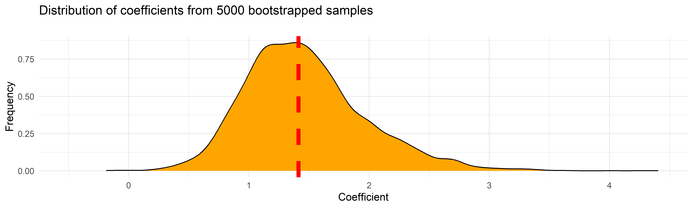
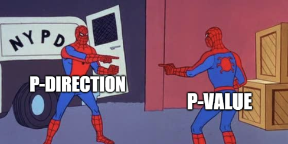

Show figure code
df <- bayestestR::simulate_correlation(n=500, r=0.7)
df |>
ggplot(aes(x=V1, y=V2)) +
geom_point() +
geom_smooth(method="lm", formula = 'y ~ x', se=FALSE, linewidth=2, color="red") +
theme_bw()@ LaPsyDé


y given x with a testPearson's product-moment correlation
Parameter1 | Parameter2 | r | 95% CI | t(30) | p
----------------------------------------------------------------
mtcars$wt | mtcars$qsec | -0.17 | [-0.49, 0.19] | -0.97 | 0.339
Alternative hypothesis: true correlation is not equal to 0ggplot(df, aes(x=V1, y=V2)) +
geom_point(alpha=0) +
geom_vline(xintercept = 0, linetype="dotted") +
geom_abline(intercept = 1, slope = 3, color="red", linewidth=2) +
geom_segment(aes(x = 0, y = 1, xend = 1, yend = 1), linewidth=1,
color="green", linetype="dashed") +
geom_segment(aes(x = 1, y = 1, xend = 1, yend = 4), linewidth=1,
color="green", linetype="solid", arrow=arrow(length = unit(0.1, "inches"))) +
geom_segment(aes(x = 0, y = 0, xend = 0, yend = 1), linewidth=1,
color="blue", linetype="solid", arrow=arrow(length = unit(0.1, "inches"))) +
geom_point(aes(x = 0, y = 0), color="purple", size=8, shape="+") +
labs(x="x", y="y") +
theme_bw() +
coord_cartesian(xlim = c(-1, 1.5), ylim = c(-3, 4))p <- mtcars |>
ggplot(aes(x=qsec, y=mpg)) +
geom_point(alpha=0.7, size=6) +
geom_smooth(method="lm", formula = 'y ~ x', se=FALSE, linewidth=2) +
geom_segment(aes(x = qsec, y = mpg, xend = qsec, yend = predict(lm(mpg ~ qsec, data=mtcars))),
color="red", linetype="dotted", linewidth=1) +
theme_bw() +
labs(x="x", y="y", title="The residuals are the vertical distances between each point and the line.")
p2 <- data.frame(Error=insight::get_residuals(lm(mpg ~ qsec, data=mtcars))) |>
ggplot(aes(x=Error)) +
geom_histogram(bins=10, fill="grey", color="black") +
geom_vline(xintercept = 0, linetype="dashed") +
geom_density(data=data.frame(Error=bayestestR::distribution_normal(n=100, sd = 2)),
aes(y=after_stat(density)*40), color="#F44336", linewidth=1, adjust=1) +
geom_density(data=data.frame(Error=bayestestR::distribution_normal(n=100, sd = 3)),
aes(y=after_stat(density)*50), color="#FF5722", linewidth=1, adjust=1) +
geom_density(data=data.frame(Error=bayestestR::distribution_normal(n=100, sd = 4)),
aes(y=after_stat(density)*60), color="#FF9800", linewidth=1, adjust=1) +
geom_point(aes(y=0), size=10, shape=16, alpha=0.3) +
theme_bw() +
coord_flip() +
labs(y = "Density")
p + theme(plot.title = element_blank()) | p2model <- lm(mpg ~ qsec, data=mtcars)
p <- mtcars |>
ggplot(aes(x=qsec, y=mpg)) +
geom_smooth(method="lm", formula = 'y ~ x', se=FALSE, linewidth=2) +
theme_bw()
# Function to add normal distribution curves
add_normals <- function(p, model) {
sigma <- summary(model)$sigma # Standard deviation of residuals
n <- 100 # Number of points for each curve
for(i in 1:nrow(mtcars)) {
x_val <- mtcars$qsec[i]
y_pred <- predict(model, newdata = data.frame(qsec = x_val))
# Create a sequence of y values for the normal curve
y_seq <- seq(y_pred - 3*sigma, y_pred + 3*sigma, length.out = n)
density <- dnorm(y_seq, mean = y_pred, sd = sigma)
# Adjust density to match the scale of the plot
max_width <- 1 # Max width of areas
density_scaled <- (density / max(density)) * max_width
# Create a dataframe for each path
path_df <- data.frame(x = x_val + density_scaled, y = y_seq)
path_dfv <- data.frame(x=path_df$x[1], ymin=min(path_df$y), ymax=max(path_df$y))
# Add the path to the plot
p <- p +
geom_segment(data = path_dfv, aes(x = x, xend=x, y = ymin, yend=ymax),
color = "#FF9800", linewidth = 0.7, alpha=0.8, linetype="dotted") +
geom_path(data = path_df, aes(x = x, y = y),
color = "#FF9800", linewidth = 1, alpha=0.8)
}
p
}
# Create the final plot
p <- add_normals(p, model) +
geom_segment(aes(x = qsec, y = mpg, xend = qsec, yend = predict(lm(mpg ~ qsec, data=mtcars))),
color="red", linetype="solid", linewidth=1) +
geom_point(alpha=0.8, size=6)
p
Call:
lm(formula = mpg ~ qsec, data = mtcars)
Residuals:
Min 1Q Median 3Q Max
-9.8760 -3.4539 -0.7203 2.2774 11.6491
Coefficients:
Estimate Std. Error t value Pr(>|t|)
(Intercept) -5.1140 10.0295 -0.510 0.6139
qsec 1.4121 0.5592 2.525 0.0171 *
---
Signif. codes: 0 '***' 0.001 '**' 0.01 '*' 0.05 '.' 0.1 ' ' 1
Residual standard error: 5.564 on 30 degrees of freedom
Multiple R-squared: 0.1753, Adjusted R-squared: 0.1478
F-statistic: 6.377 on 1 and 30 DF, p-value: 0.01708[1] 5.563738
attr(,"class")
[1] "insight_aux" "numeric" Parameter | Coefficient | SE | 95% CI | t(30) | p
--------------------------------------------------------------------
(Intercept) | 4.925 | 1.765 | [ 1.319, 8.530] | 2.790 | 0.009
qsec | -0.096 | 0.098 | [-0.297, 0.105] | -0.972 | 0.339# Plot t-distribution
x <- seq(-5, 5, length.out = 1000)
y <- dt(x, df=30)
df <- data.frame(x = x, y = y)
t_value <- 2.790
df$Probability <- ifelse(df$x < -t_value, "< -t", "Smaller")
df$Probability <- ifelse(df$x > t_value, "> +t", df$Probability)
df |>
ggplot(aes(x = x, y = y)) +
geom_line() +
geom_area(aes(x = x, y = y, fill = Probability), alpha = 0.5) +
geom_segment(data=data.frame(x=t_value, y=0),
aes(xend = t_value, yend = dt(t_value, df=30)),
color="red", linetype="solid", linewidth=1) +
geom_point(data=data.frame(x=t_value, y=dt(t_value, df=30)), color="red", size=3) +
theme_minimal() +
scale_fill_manual(values = c("red", "red", "grey")) +
labs(x = "\nt-values - standardized coefficient under the null hypothesis", y = "Probability",
title = paste0("t-Distribution (df=30); ", "t-value = ", round(t_value, 2), "\n")) mpg cyl disp hp drat wt qsec vs am gear carb
Mazda RX4 21.0 6 160 110 3.90 2.620 16.46 0 1 4 4
Mazda RX4 Wag 21.0 6 160 110 3.90 2.875 17.02 0 1 4 4
Datsun 710 22.8 4 108 93 3.85 2.320 18.61 1 1 4 1
Hornet 4 Drive 21.4 6 258 110 3.08 3.215 19.44 1 0 3 1
Hornet Sportabout 18.7 8 360 175 3.15 3.440 17.02 0 0 3 2
Valiant 18.1 6 225 105 2.76 3.460 20.22 1 0 3 1 [1] 26 14 3 24 4 17 3 28 31 30 18 14 11 20 27 8 19 31 3 20 12 19 12 7 20
[26] 4 20 16 1 11 5 30model <- lm(mpg ~ qsec, data=mtcars) # Fit linear regression
true_coef <- coef(model)[2] # Extract slope coefficient
coefs <- c() # Initialize an empty vector of coefs
for (i in 1:5000) { # Repeat the process 500 times
new_sample <- mtcars[sample(1:nrow(mtcars), replace = TRUE), ] # Sample new data
new_model <- lm(mpg ~ qsec, data=new_sample) # recompute the model
coefs <- c(coefs, coef(new_model)[2]) # Append the coef to the vector
}data.frame(coefs = coefs) |>
ggplot(aes(x = coefs)) +
geom_density(fill="orange") +
geom_vline(xintercept = true_coef, color="red", linetype="dashed", linewidth=2) +
theme_minimal() +
labs(x = "Coefficient", y = "Frequency",
title = "Distribution of coefficients from 5000 bootstrapped samples\n") +
coord_cartesian(xlim = c(-0.5, NA))

bayestestR exists to convert between the two indices.

# Proportion of samples inside the ROPE [-0.42, 0.42]:
inside ROPE
-----------
0.66 % bayestestR::describe_posterior(coefs,
centrality="mean",
dispersion=TRUE,
ci=0.90,
ci_method="hdi",
rope_range =c(-0.9, 0.9),
test="rope")Summary of Posterior Distribution
Parameter | Mean | SD | 90% CI | ROPE | % in ROPE
------------------------------------------------------------------
Posterior | 1.46 | 0.50 | [0.72, 2.30] | [-0.90, 0.90] | 8.51%brmsstan_lm(), stan_glm(), stan_lmer(), stan_glmer(), stan_gamm4() etc.)brm(), which can fit almost any model# Fixed Effects
Parameter | Median | 95% CI | pd | Rhat | ESS
----------------------------------------------------------------
(Intercept) | 15.34 | [13.25, 17.47] | 100% | 1.000 | 3454.00
mpg | 0.12 | [ 0.02, 0.22] | 99.30% | 1.000 | 3394.00
# Sigma
Parameter | Median | 95% CI | pd | Rhat | ESS
----------------------------------------------------------
sigma | 1.68 | [1.34, 2.22] | 100% | 1.000 | 3387.00refresh=0 silences the printing of the sampling (to avoid cluttering this slide)model <- glmmTMB::glmmTMB(qsec ~ mpg + (1|gear), data = mtcars)
parameters::parameters(model, effects="fixed")# Fixed Effects
Parameter | Coefficient | SE | 95% CI | z | p
------------------------------------------------------------------
(Intercept) | 14.81 | 1.26 | [12.34, 17.28] | 11.75 | < .001
mpg | 0.13 | 0.05 | [ 0.03, 0.23] | 2.64 | 0.008 model <- brms::brm(qsec ~ mpg + (1|gear), data = mtcars, refresh=0)
parameters::parameters(model, effects="fixed")# Fixed Effects
Parameter | Median | 95% CI | pd | Rhat | ESS
----------------------------------------------------------------
(Intercept) | 14.83 | [11.70, 17.92] | 100% | 1.001 | 887.00
mpg | 0.13 | [ 0.03, 0.23] | 99.33% | 1.001 | 2213.00
# Sigma
Parameter | Median | 95% CI | pd | Rhat | ESS
----------------------------------------------------------
sigma | 1.35 | [1.05, 1.83] | 100% | 1.002 | 1658.00Thank you!